About Me
|
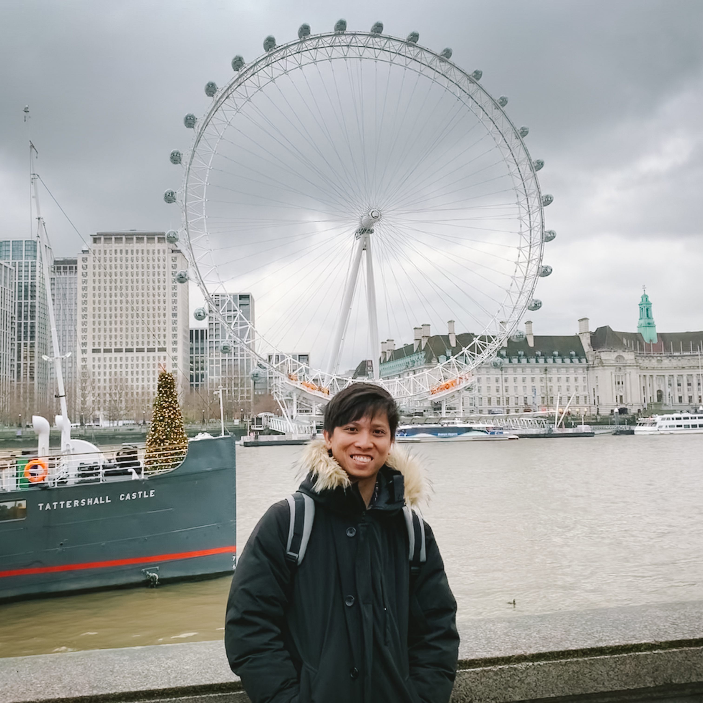 |
Man M. Ho Research Fellow Scientific Computing and Imaging Institute (SCI) University of Utah Salt Lake City, UT Contact: man.ho (at) sci.utah.edu Personal: manminhho.cs (at) gmail.com |
This is a webpage for my done/ongoing projects and photos. My interests lie in Computer Vision, Deep Learning, Pathology Imaging, and Photography. Also, I love taking/editing/retouching photographs. Please check my [CV] for more details.
My projects are related to
|
Computational Photography: |
Pathology Imaging: |
Publications
|
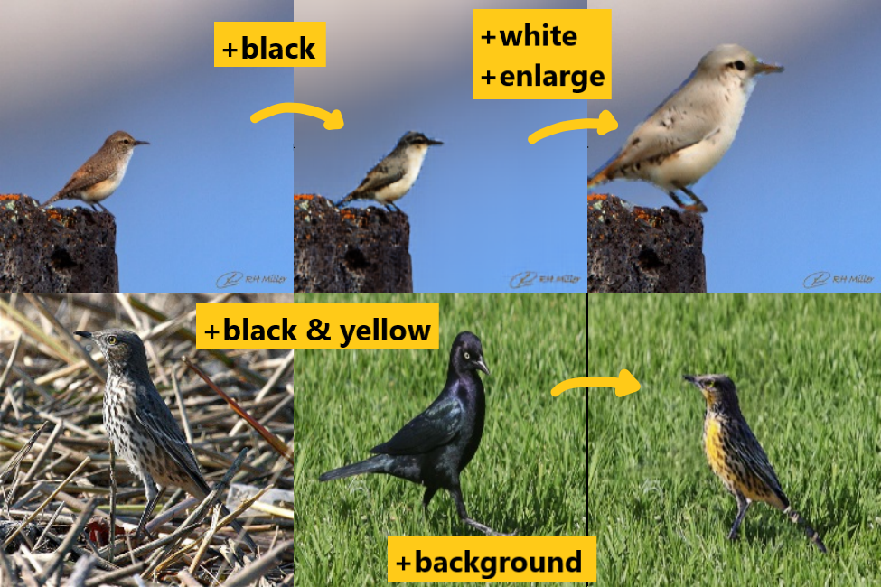 |
Interactive Image Manipulation with Complex Text Instructions Ryugo Morita, Zhiqiang Zhang, Man M. Ho, Jinjia Zhou In Winter Conference on Applications of Computer Vision (WACV), 2023. |
|
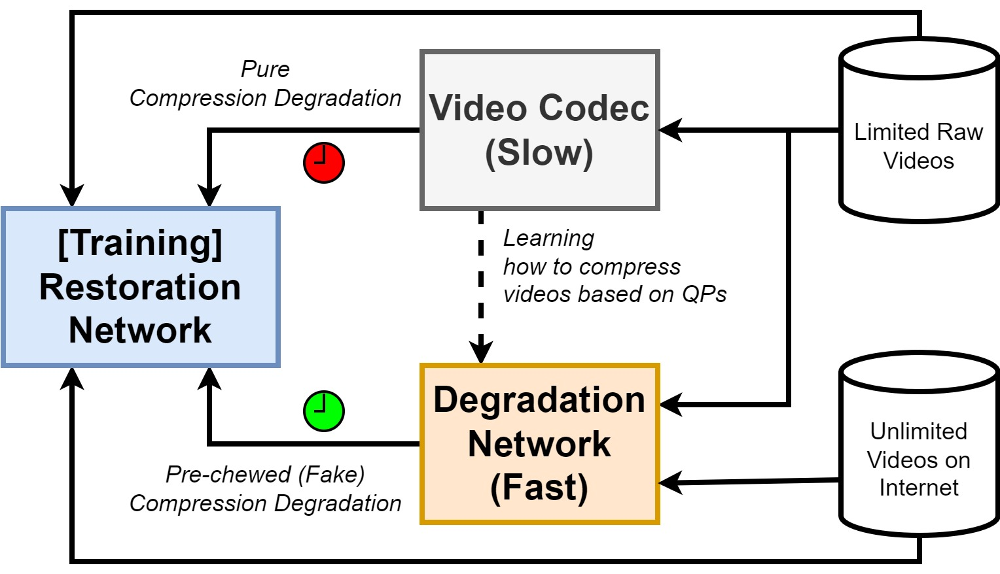 |
On Pre-chewing Compression Degradation for Learned Video Compression Man M. Ho, Heming Sun, Zhiqiang Zhang, Jinjia Zhou In IEEE International Conference on Visual Communications and Image Processing (VCIP), 2022. |
|
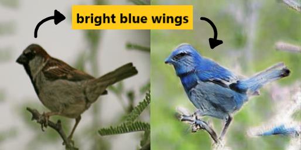 |
Text-guided Image Manipulation based on Sentence-aware and Word-aware Network Zhiqiang Zhang, Chen Fu, Man M. Ho, Jinjia Zhou, Ning Jiang, Wenxin Yu In IEEE International Conference on Multimedia and Expo (ICME), 2022. Presented at AI for Content Creation Workshop (AI4CC) - CVPRW, 2022. |
|
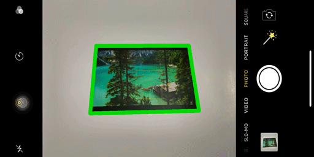 |
Deep Photo Scan: Semi-Supervised Learning for dealing with the real-world degradation in Smartphone Photo Scanning Man M. Ho, Jinjia Zhou In Winter Conference on Applications of Computer Vision (WACV), 2022. |
|
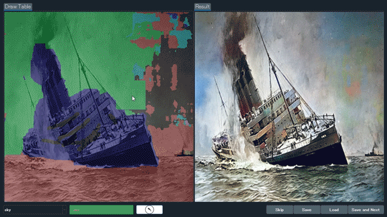 |
Semantic-driven Colorization Man M. Ho, Lu Zhang, Alexander Raake, Jinjia Zhou In ACM SIGGRAPH European Conference on Visual Media Production (CVMP), 2021. |
|
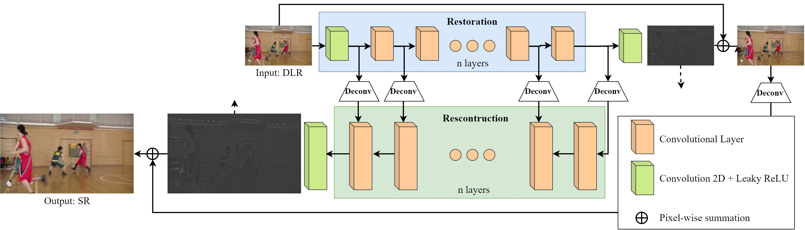 |
RR-DnCNN v2.0: Enhanced Restoration-Reconstruction Deep Neural Network for Down-Sampling Based Video Coding Man M. Ho, Jinjia Zhou, Gang He In IEEE Transactions on Image Processing (TIP), 2021. |

|
Deep Preset: Blending and Retouching Photos with Color Style Transfer Man M. Ho, Jinjia Zhou In Winter Conference on Applications of Computer Vision (WACV), 2021. |
|
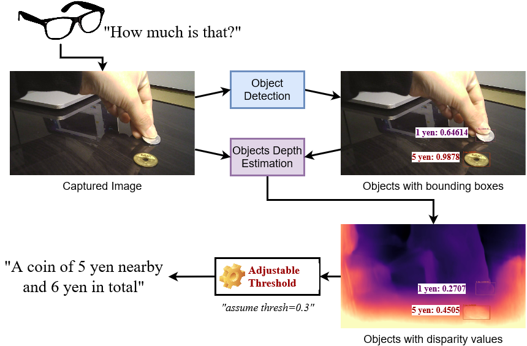 |
Japanese Coins and Banknotes Recognition for Visually Impaired People Huyen T. T. Bui, Man M. Ho, Xiao Peng, Jinjia Zhou In VizWiz Workshop, 2020. |
|
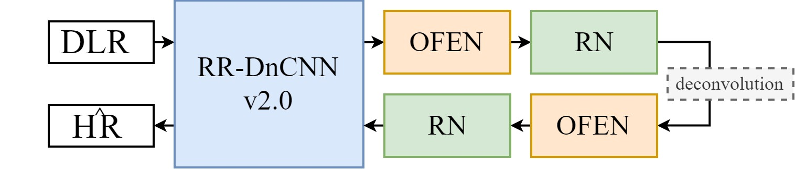 |
SR-CL-DMC: P-frame coding with Super-Resolution, Color Learning, and Deep Motion Compensation (Top-5 performance among teams which have submitted a factsheet on P-frame Track, CLIC2020) Man M. Ho, Jinjia Zhou, Gang He, Muchen Li, Lei Li In Conference on Computer Vision and Pattern Recognition (CVPR) Workshops, 2020. |
|
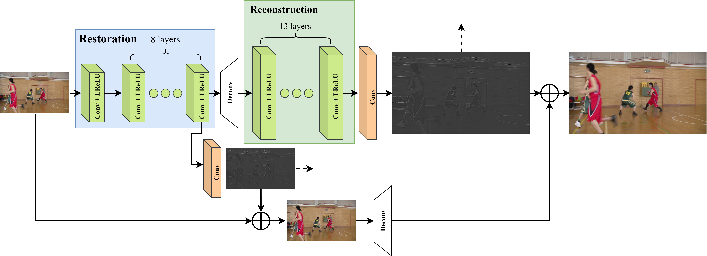 |
Down-Sampling Based Video Coding with Degradation-Aware Restoration-Reconstruction Deep Neural Network (Oral - Best Paper Runner-up Award) Man M. Ho (Minh-Man Ho), Gang He, Zheng Wang, Jinjia Zhou In International Conference on Multimedia Modeling (MMM), 2020. |
|
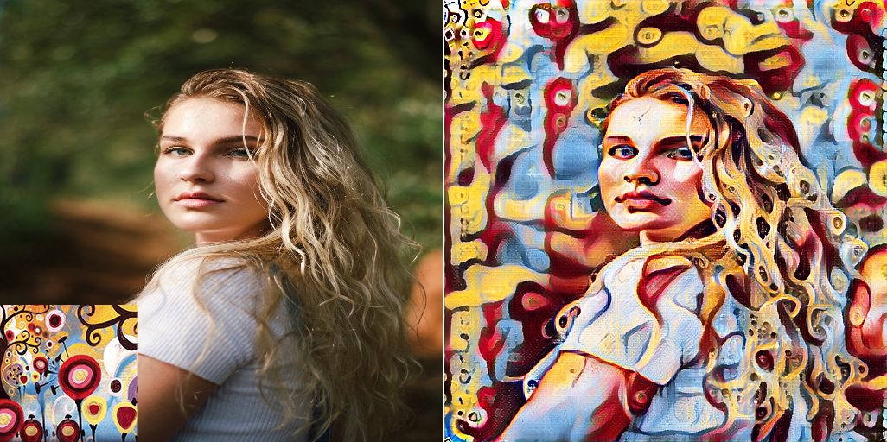 |
Respecting Low-level Components of Content with Skip Connections and Semantic Information in Image Style Transfer (Oral) Man M. Ho (Minh-Man Ho), Jinjia Zhou, Yibo Fan In ACM SIGGRAPH European Conference on Visual Media Production (CVMP), 2019. |
{kind=link}
Awards and Honors
2020/07, "Hosei University Science and Engineering Departments Education/Research Promotion Fund Academic Achievement Award 2020".2020/01, "Best Paper Runner-up Award" at MMM2020, Deajeon, Korea.
2018/08, "Key Contributor" by EyeQ Tech, Vietnam.
2018/08, "Squad of the month" by EyeQ Tech, Vietnam.
2016/12, “The Five-Virtue Student” by Vietnam National University, University of Information Technology.
Professional Experience
I have served as a reviewer for:Gallery
This collection syncs with The story of the Man (me, Man is my name).Also, let's check Sarugraphy Flickr for photos I've taken for others.
(All rights reserved, Powered by Flickr)